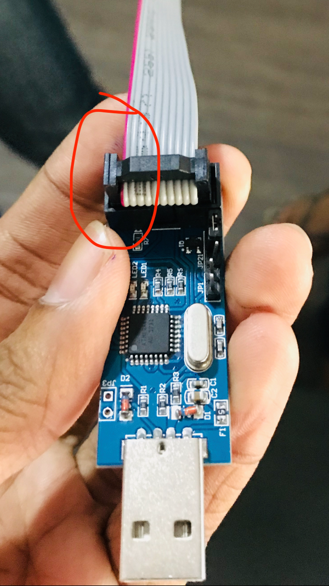

ML Learning a new hardware platform (ScholarX - Part 2) This post mainly reflects my experience in stepping into a new field with the help of my mentors.Recently, I've been interested on Field Programmable Gate Arrays(FPGAs). The excitement grew from the
Electronics Making a robot Visualisation Platform from Scratch (and how you can do the same) [this post will be updated further with code]When I first started out developing our robot for the EN2532 module, I dreamt of having a control panel on a computer which can see
Building Blocks Matter!: #ScholarX It was 12.05pm, and I was in my Electronics II lecture. Knowing that the time is right for our online gathering, I left the hall with my earphones. Soon, all five of
Untold story of eliminating distractions on both laptop and phone üôÖ‚Äç‚ôÇÔ∏è There are two creatures living inside my head who behave opposite to another. While I know that I should be studying, randomly the other creature opens a tab on facebook. These two had
How to create a fully functional voting system (If you're in a hurry) There's a time every year when I'm in the middle of a lecture and I receive a call from a friend asking 'Hey Machn, there's this event on Saturday, can you create an
LaTeX LaTeX 101 → Useful tips to get started. I was so surprised by the fact that most coding/math books had the same typography system in it. (nice consistent fonts, pages, numbers etc.) Then I found out that most scientific documents
DL Setting up DeepLearning Machine on Azure for fast.ai ⤑ (draft) (updates in progress.. written for my own reference. proceed at your own risk)https://azuremarketplace.microsoft.com/en-us/marketplace/apps/microsoft-ads.dsvm-deep-learning(setting up Deep Learning VM - NC6)Finally,
Creating a pulse sensor from scratch üíü This article will be on developing a pulse sensor using photoplethysmogram. ATmega32 is used to count pulses
meta Creating a sustainable blog..? ¯\_(ツ)_/¯ Over the years, I have used various cloud providers to host my kiddy versions of my websites/blogs. However due to my lack of continuity, those faded away. If I take a closer
Signal and Systems Experiments Analysing Second Order System Response of an RLC Circuit Analysing Second Order System Response of an RLC Circuit using Mathematica
Signal and Systems Experiments Does Bilateral Laplace Transform Exist for Sin(t) ? This had been a question which was bothering me. So here is my question posted on DSP, Stackexchange. When we were learning Fourier Transforms, we easily derived the fourier transform of sin(t)
Signal and Systems Experiments Understanding Properties of the Laplace Transform using Wolfram Language üê∫ Digging into the Wolfram Language, I found out that LaplaceTransform on it was defined for the Unilateral Laplace Transform instead. So to get the transforms of non causal signals I manually defined the Bilateral Laplace Transform as LT (wanted a shorter function name!)
Signal and Systems Experiments Visualising Convolution in CT through Mathematica The following code can be used to convolve signals x(t) and h(t) and plot them in an interactive way.The blue curve represents the convolved signal y(t) at t, while
 AVR Atmega328p interfacing with a breadboard The same tutorial for the ATMega32 can be used (changing only the IC in the Project along with the external tools) to program a ATMega328p even without the minimum system board, according to
Signal and Systems Experiments Notch Filter to remove noise from an ECG Signal This experiment is based on a question at the Lab Exam (EN1093).According to the following difference equation which relates output (y[n]) and input (x[n]) we were asked to derive the
AVR Troubleshooting Issues with the ATmega The following cases are based on the responses I got, I wil post them here so that anyone who gets the same problem will be able to resolve the issue.1) avrdude.exe
AVR ATMega32 Tutorial Series 2- (configuring USBasp with atmel studio) To proceed with this article, you need to have configured atmel studio and USBasp drivers correctly. This tutorial is based on this article. Step 1: Compilation Tool ChainGo to Tools > Options >
AVR ATMega32 Tutorial Series 1- (Setting up the environment) This tutorial series will be based on this amazing guide created by Shehan Munasinghe. If you're a beginner there are several terminologies you should be familiar about, otherwise these terms will make no